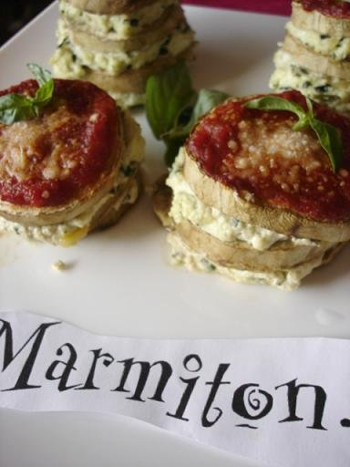

Aubergines ricotta pesto
Ingrédients
4×
- 4 aubergines
- 1 pot de pesto (180g)
- 300 g de brousse ou ricotta
- 1 petite brique de coulis de tomate
- chapelure

Préparation
Étape 1
Éplucher 4 aubergines, les couper en tranches fines et les cuire 10min au four à 200ºC sur une plaque.
Étape 2
Mélanger 1 pot de pesto (180g) et 300 g de brousse ou ricotta, saler très peu et poivrer.
Étape 3
Dans un plat à gratin, alterner aubergines et mélange, en finissant par des aubergines. Recouvrir de 1 petite brique de coulis de tomate, saupoudrer de chapelure et arroser d’un filet d’huile d’olive.
Étape 4
Cuire 30min à 200ºC.
Résumé
4 aubergines
couper en tranches fines cuire 200ºC
1 pot de pesto (180g)
300 g de brousse ou ricotta
Mélanger
1 petite brique de coulis de tomate
chapelure
alterner
Cuire 200ºC